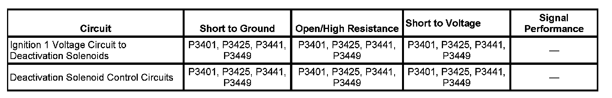
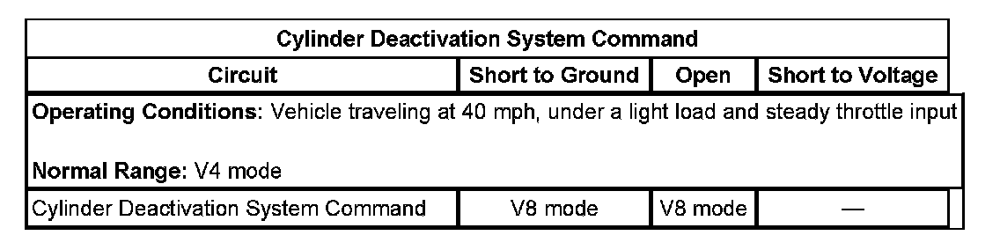
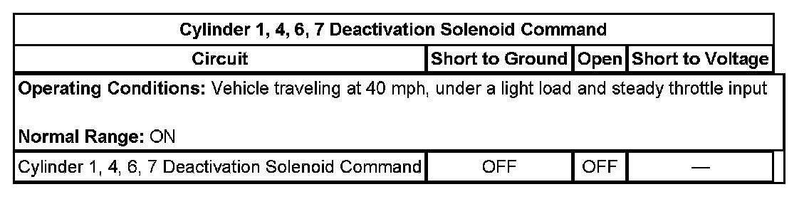
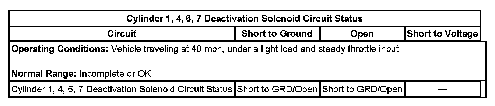
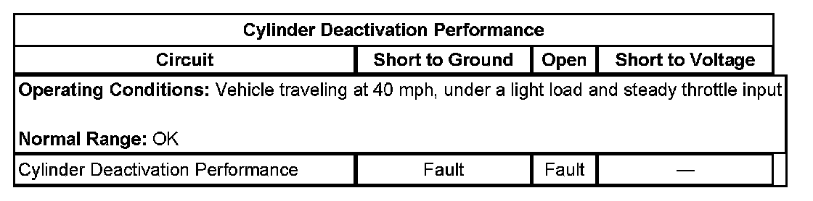

P3425
DTC P3401, P3425, P3441, or P3449
DTC DESCRIPTORS
DTC P3401
Cylinder 1 Deactivation Solenoid Control Circuit
DTC P3425
Cylinder 4 Deactivation Solenoid Control Circuit
DTC P3441
Cylinder 6 Deactivation Solenoid Control Circuit
DTC P3449
Cylinder 7 Deactivation Solenoid Control Circuit
DIAGNOSTIC FAULT INFORMATION

Perform the Diagnostic System Check - Vehicle prior to using this diagnostic procedure. Initial Inspection and Diagnostic Overview
Cylinder Deactivation System Command:

Cylinder 1,4,6,7 Deactivation Solenoid Command:

Cylinder 1,4,6,7 Deactivation Solenoid Circuit Status:

Cylinder Deactivation Performance:

TYPICAL SCAN TOOL DATA
CIRCUIT/SYSTEM DESCRIPTION
Each of the four valve lifter oil manifold (VLOM) solenoid windings, are connected in parallel to a fused ignition circuit, supplied by the powertrain relay, in the underhood fuse block. The control circuit for each solenoid is connected to an individual low side driver, internal to the engine control module (ECM). Each low side driver has its own fault detection circuit, which monitors the solenoid control circuit for an incorrect voltage level. If an incorrect voltage level, such as an open/high resistance, or short to ground is detected, the low side driver will turn OFF, and the fault detection circuit will communicate the condition to the central processor internal to the ECM. These DTCs will set when the ECM detects an incorrect voltage level on the ignition circuit, the solenoids, or a solenoid control circuit, after the ignition switch is turned ON. If a VLOM solenoid control circuit DTC is set, the ECM will command V8 mode, turn ON the malfunction indicator light (MIL), and turn OFF the fuel injector for that cylinder, resulting in an engine misfire.
CONDITIONS FOR RUNNING THE DTC
- The engine speed is greater than 400 RPM.
- The ignition voltage is between 9-18 volts.
- DTC P3401, P3425, P3441, and P3449 runs continuously when the above conditions are met.
CONDITIONS FOR SETTING THE DTC
- The ECM detects that the commanded state of the low side driver and the actual voltage level of the control circuit do not match.
- The condition is present for 20 out of 25 sample counts.
ACTION TAKEN WHEN THE DTC SETS
- DTC P3401, P3425, P3441, and P3449 are type B DTCs.
- The engine will return to V8 mode.
- The fuel injector will turn OFF for the cylinder that has a cylinder deactivation DTC set, resulting in an engine misfire.
CONDITIONS FOR CLEARING THE DTC
DTC P3401, P3425, P3441, and P3449 are type B DTCs.
DIAGNOSTIC AIDS
The VLOM solenoids are assigned to the following engine cylinders:
- Solenoid #1 = Cylinder #1
- Solenoid #2 = Cylinder #4
- Solenoid #3 = Cylinder #6
- Solenoid #4 = Cylinder #7
IMPORTANT: This test procedure requires that the vehicle battery has passed a load test and is completely charged. Refer to Battery Inspection/Test. Battery Inspection/Test
1. Ignition ON, engine OFF, measure and record the ignition voltage at the fuse for the VLOM assembly.
2. Remove the fuse for the VLOM assembly from the underhood fuse block.
3. Connect a DMM in series with a 15A fused jumper wire and a non-fused jumper wire across the exposed fuse terminals in the underhood fuse block.
4. Select the 10A range and zero out the DMM display.
5. Command each VLOM solenoid ON with a scan tool.
6. Record the amperage reading display on the DMM for each solenoid.
7. Calculate the resistance for each solenoid circuit. Divide the previously recorded voltage by the amperage for each VLOM solenoid circuit. The total resistance for each solenoid circuit should be within 11-22 ohms.
- If the total circuit resistance exceeds 22 ohms, an open/high resistance condition exists in the VLOM solenoid circuit.
CIRCUIT/SYSTEM VERIFICATION
Ignition ON, engine OFF, command each VLOM solenoid ON and OFF several times using the scan tool. Listen for the VLOM solenoids to turn ON and OFF.
- If the vehicle passes the Circuit/System Verification, then operate the vehicle within the conditions for running the DTC. You may also operate the vehicle within the conditions that are captured in the Freeze Frame/Failure Records Data List.
CIRCUIT/SYSTEM TESTING
IMPORTANT: Perform the Circuit/System Verification first.
1. Ignition OFF, remove the fuel pump fuse or the fuse for the fuel system control module.
2. Perform the Fuel Pressure Relief.
3. Remove the Intake Manifold.
4. Disconnect the VLOM harness connector.
5. Ignition ON, verify that a test lamp illuminates between the ignition circuit terminal E, and ground.
- If the test lamp does not illuminate, test the ignition circuit for a short to ground or an open/high resistance. If the circuit tests normal and the ignition circuit fuse is open, test or replace the VLOM assembly.
6. Connect a test lamp between the appropriate control circuit terminal and the ignition circuit terminal E.
7. Command the VLOM solenoid ON and OFF with a scan tool. The test lamp should turn ON and OFF when changing between the commanded states.
- If the test lamp is always ON, test the control circuit for a short to ground. If the circuit test normal, replace the ECM.
- If the test lamp is always OFF, test the control circuit for a short to voltage, or an open/high resistance. If the circuit tests normal, replace the ECM.
8. If all circuits test normal, test or replace the VLOM assembly.
COMPONENT TESTING
IMPORTANT: Perform the Circuit/System Testing first.
Static Test
1. Ignition OFF, disconnect the VLOM harness connector at the VLOM assembly.
2. Connect the cable that is labeled resistance from the displacement on demand (DoD) tester to the VLOM connector.
3. Connect the power leads from the DoD tester to B+ and ground. Test for 11-18 ohms of resistance on each VLOM solenoid.
- If the resistance is not within the specified range for each solenoid, replace the VLOM assembly.
4. Test for infinite resistance between each VLOM circuit terminal and the VLOM housing.
- If less than infinite resistance, replace the VLOM assembly.
Dynamic Test
1. Ignition OFF, disconnect the VLOM harness connector at the VLOM assembly.
2. Connect the cable that is labeled power from the displacement on demand DoD tester to the VLOM connector.
3. Connect the power leads from the DoD tester to B+ and ground.
4. Command each VLOM solenoid ON and OFF using the DoD tester. You should be able to hear each solenoid turn ON and OFF.
- If the function does not perform as specified, replace the VLOM assembly.
REPAIR INSTRUCTIONS
Perform the Diagnostic Repair Verification after completing the diagnostic procedure.
- Valve Lifter Oil Manifold Replacement
- Control Module References for replacement, setup, and programming. Verification Tests